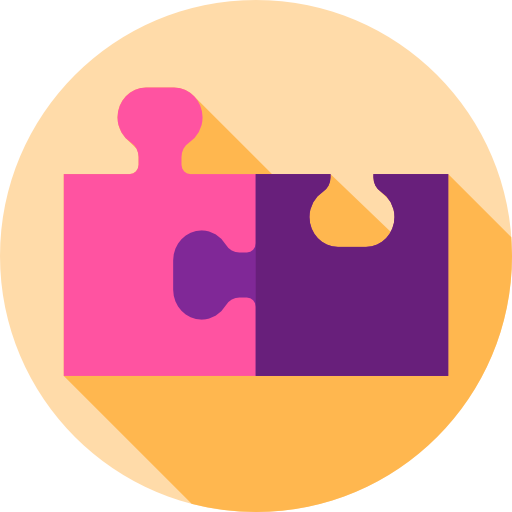

<!--
  Generated template for the ListChatsPage page.

  See http://ionicframework.com/docs/components/#navigation for more info on
  Ionic pages and navigation.
-->
<ion-header>

  <ion-navbar>
    <ion-title>
        <p align="center">
            Chats
        </p>
    </ion-title>
  </ion-navbar>

</ion-header>


<ion-content padding>
  <ion-list>
    <ion-item-sliding *ngFor="let activity of showedActivities">
        <p> fsf </p>
        <ion-item (click)="onChatSelected(activity)">
            <ion-avatar item-start>
                
                
            </ion-avatar>
            <h2>{{activity.name}}</h2>
            <p>{{activity.description}}</p>
          </ion-item>
          <ion-item-options side="right">
              <button ion-button color="danger" (click)="onDeleteChat(chat._id)">
                <ion-icon name="trash"></ion-icon>
                Delete
              </button>
          </ion-item-options>
    </ion-item-sliding>
  </ion-list>
</ion-content>
